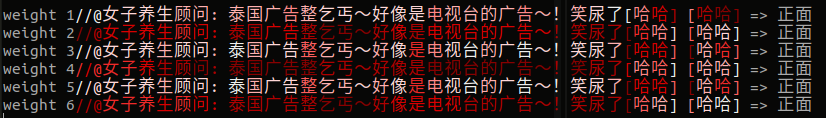
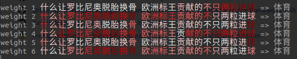

如何评估LSTM每个时间步的重要性？
如何评估LSTM每个时间步的重要性？这是一个很久很久以前做的实验，鉴于做了一些NLU的可视化，趁着对文本的重要性可视化理解相关的实验和研究意犹未尽，一于今天也把这个实验整理一下并可视化以及开源实现代码。
重要性评估
RNN对序列数据有着天生的建模能力，但是每个输入对输出的重要性并没有显式表达出来。
我们拿简单的线性自回归模型来说，不难有如下推导，
因此，$(h_{n} - h_{i}) - (h_{n} - h_{i+1})$可以作为$\alpha_{i+1}x_{i+1}$的估计，即词或字$x_{i+1}$的重要性
加上绝对值，
规范化，
不过这样做最后一个字的权重为0， 为此添加一个“哨兵字”在每个句子的结尾。
类似地，每个时间步的隐向量与最后的隐向量的相似度，
诸如此类，还有很多的权重设计思路，具体下面介绍。
权重设计
探索LSTM网络中，每个time steps输入的重要性。根据自回归的特点，这里设计了几种比较直观的输入权重重要性的计算方法：
- 句向量与每个词向量的内积
- 句向量与每个词向量的差
- 词向量错位相减
- 句向量与每个词向量的差，取每个时间步向量的最大值
- 句向量与每个词向量的差并错位相减
- 词向量的方差
以上的说明和具体实现又少许差别，具体可参看源码rnn_weights.py
实验和效果
输出的权重$w$作为文本的重要性权重，根据权重的大小渲染文本的颜色深浅，颜色越深越红，重要性越大，

这里可视化使用红色系colormap，颜色越深代表权重越大，反之则越小，如下：
下面是文本分类任务的可视化，文字颜色越红越深字权重越大。一些实验结果的可视化（颜色越深代表权重越大）：



实验下来发现第一个权重和第五个权重设计效果较好，更能准确捕捉关键信息（强化关键信息弱化其他信息），
1 | class RNNWeight5(tf.keras.layers.Layer): |
实现上，添加特殊的标记结尾，即句子最后添加一个哨兵标记，对效果无影响，只是实现方便。具体可参看源码，代码开源在text-signification-in-rnn。
总结
这里提供的是比较直观的方法判断RNN每个时间步对输出的重要性，并进行了一些实验。
转载请包括本文地址：https://allenwind.github.io/blog/13147
更多文章请参考：https://allenwind.github.io/blog/archives/